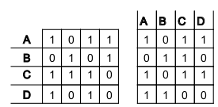
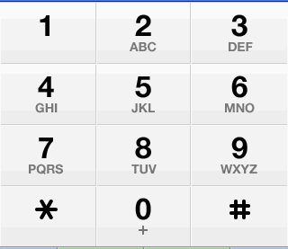
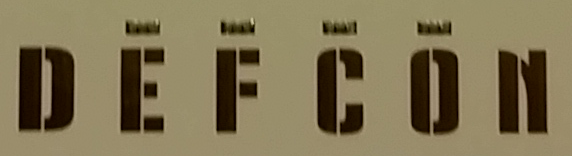

DEFCON 22 Badge Contest
By:Elegin
Winning Team = [MLF]: CK(Crypt Killer), Decrement, Elegin, Beaker, Jabroni, Llamaprincess
Yes, that is us...I think..I could be mistaken it was Saturday @ 5:46am after three days of little to no sleep that ended in a 9 hour brain melting scramble to keep ahead of other teams.
The following is a gallifreyan chronology of the events occurring between August 6th 2014 through August 10th 2014 ( I use the term gallifreyan chronology because I will be going back and forth in time to explain said events ).
We start this story as a group of friends in room laughing, joking, and having a good time; elegin, CK, Llamaprincess , Decrement, Beeker, and Jabroni. It ended with me (elegin) in chair with a shoe on my hand and my foot in a bucket of gummy bears. Beeker had duct taped himself to the ceiling, there was a bottle of vodka on the ground with series of connected straws in the shape of what looked like cthulhu spawning from it that was affixed with staples in Beekers ear while whispering “meep meep meep” ( for him that wasn't actually odd). Jabroni was inside the mini fridge eating glow sticks wearing only oven mitts. Decrement created a fort out of the cushions and was screaming at the lamp to “come get some” as he was throwing feathers at it and when they would float back down he would scream and do it again. CK and Llamaprincess were in a bathtub filled with sand painting each others toenails with candle wax. Now, I know what your thinking. Your thinking this is madness. NO THIS IS DEF CON! (and it's canceled) .
This writeup is not for the weak of heart or the ill of will. It is for those who nestle in a bed of crazy and snuggle with a layer of insane.
As stated above most of us got into vegas wednesday afternoon, so we could do the normal get some pictures of lanyards and possibly some badges. This was the first “oh crap” moment. I was the only one of the group that had a room at the RIO. While everyone else was checking into their respective hotels, I went on the first scouting mission.
On my way down to the conference area I noticed my first goon/lanyard combo. I politely asked if I could take a picture of the badge and lanyard. At this point I figured I was just about done. Usually we only get the goon badge (Def Con security) on Wednesday and maybe two or three lanyards at best. I have never been so wrong. I ran into a few other goons ( rinse repeat ) and noticed two different lanyards. I was like “sweet, I am so leet”. Then I ran across a vendor badge and contest, cool but these are easy to get. Then I got a speaker badge, nice not a big deal but usually don't get them on Thursday. I also noticed a another lanyard. By this point, I am freaking out. I felt like a pokemon collector. I see a group of like four or five guys walking towards me be with badges and I stopped them and noticed they were the artist badge, NO WAY! Yes way. I was all over these guys and they were getting freaked out! I am fairly confident I sexually assaulted one on accident. After some awkward moments they backed up and threw down a smoke pellet and vanished. Well, really they just backed up and said this is getting weird.
I still haven't even gotten to the main conference area yet. Yes, this is tedious but I was so psyched to get all this data I about wet myself ( truthfully I did, but just a little. No big deal). The next forty minutes was more of me being overexcited and groping goons trying to get lanyards like three year old reaching for candy.
I was able to get a human badge and some more lanyards. At this point I needed to head back up to the room and start working.
AND this is were gallifreyan time comes into the writeup. Once you start down the rabbit hole it starts to get weird and confusing. I honestly don't remember a lot about what was solved first, we just get things and start working on them. We solve stuff out of order, we get partial solutions and we brute force some stuff.
Pretty straight forward. We got a block of numbers in the Def Con program on page 4 - “The Badge”.
07 21 18 03 18 05 05 22 01 03 14 20 18 06
10 22 25 25 21 18 25 03 12 02 08 19 22 01
17 12 02 08 05 16 14 25 25 22 01 20 15 08
07 17 02 01 07 15 18 17 08 03 18 17 16 08
21 18 12 15 18 18 05 17 02 06 10 57 10 57
Convert numbers to alpha .. 1=A 2=B,etc..
G U R C R E E V A C N T R F
J V Y Y U R Y C L B H S V A
Q L B H E P N Y Y V A T O H
G Q B A G O R Q H C R Q P H
U R L O R R E Q B F 1 0 5 7
ROT13 that bad boy
THE PERRIN PAGES WILL HELP YOU FIND YOUR CALLING BUT DONT BE DUPED CUT DOWN THE WOODS THEY BE ERDOS 1057
HUH? Yeah, we thought the same thing.
This one gets a little Mathy, so dont worry about the details as much as “what the SH!# is Lost thinking”
The first tidbit is “PERRIN” this is referencing Perrin numbers. I 100% confident that we are the only people to ever hit that wiki page, ever. The Perrin numbers or series is a function set that given its standard input of 3 0 2 will give out this set of numbers:
3 0 2 3 2 5 5 7 10 22 29 39 51 68 90 119
At this point I would say don't worry about it will make sense shorty, It won't.
Next up is WOODS and ERDOS. Yup, "what the SH!# lost".
To keep you from burning your computer I will not go into the path we took with Erdos and Woods. Each takes you down separate and what seems to be relevant paths, but there was no cake it was a lie. Erdos-Woods numbers is what was actually needed. To keep you from burning your computer I will not go into the path we took with Erdos and Woods. Each takes you down separate and what seems to be relevant paths, but there was no cake . What was actually needed was Erdos-Woods number . Don't click on that link, just don't. Let me sum it up for your. Take your finger and poke your eye. You have just as much understanding now than if you would have clicked on it. Ah, crap you did it didn't you. I told you not to. Well either way, these are Erdos-Woods numbers 16, 22, 34, 36, 46, 56 we will only need these. We will need this for the next part, "The Page Superscipts" , sounds kind of ominous.
Remember when I said it isn't going to make sense, I am about ready to make no sense and a little change.
As you can see in the image, above some of the page numbers are more numbers, we got to calling them superscripts. Here are the Page numbers and the Superscripts:
Now, let treat the superscripts as Hex values and convert them to ascii.
That gives us:
251ASEACREEMATE!!
Now we got something. We also have Perrins and Erdos-Woods numbers. Lets start with Erdos-Woods numbers. We are going to match up Erdos-Woods with the page numbers. Why would we do this? Because lost told us to in the Program cipher: “ CUT DOWN THE WOODS THEY BE ERDOS “
This part starts to get a bit sketchy. From the Program cipher we also have “THE PERRIN PAGES WILL HELP YOU FIND YOUR CALLING” . The Parrin series is initial condition is three numbers 3 0 2 and the rest is below as such.
I'm not going to lie to you, I think we got some of this wrong but still got the solution correct. The Perrin series just didn't fit in as a mask or way to remove any values. So, we just ignore it. Remove the Erdos-Wood numbers we get:
251ASECRT!
Remember when I said I'm not going to lie? I lied. Before you judge, let me explain. We did'nt work on this first we didn't even start working on this till sometime friday after the badge talk and lost told us about a phone number. We solved another puzzle with a phone number so we were confused, it happeneds. A lot. Here is the final piece.
251ASECRET
251-273-3738
Look at that thing above. Now look at the last two columns, those little bastards and the column with 22 in are the issue. You will also notice the question marks. Here is the problem. In the Program cipher we are told "DONT BE DUPED CUT DOWN THE WOODS THEY BE ERDOS" don't be duped would refer to duplicate numbers/letter/etc. Well that sounds great but we have multiple E's and A's. The exclamation points actually make sense if your suppose remove both dupes. Usually when someone says remove the duplicates you don't remove all numbers , you leave one. So if you apply order of operations to this you cannot remove dupes first since it would take out to many E's and A's. So you have to apply Erdos-Woods numbers first then remove dupes. Which gets rid of 22 your E that you need to spell SECRET.
So in my infinity ignorance I went with this: it is Def Con 22 so we keep it and all is happy. But I am not happy. If anyone knows how this was SUPPOSE to work please email me and I will add it to the write up with full credit and a beer if I see you the canceled Def Con 23.
We got a phone number. Might as well call it. We call it. It rings. It rings. It goes to voicemail. There is a piano playing. @#$%^&@#$%@#$%@#$@
You have got to be kidding , "what the SH!# lost". We just laughed at this, then it sunk in what we had to do then there were tears. Decrement pulled some audio fu and recorded it and for the record if ever hear that tune again I will murder someone. Decrement played it and played it and slowed it down and played it and played it and played it.
Decrement got it down to three notes:
1223232212312123111312x212121311132123112x12212321111311111322222311222x122123222321321232131231123222232132x
And converted it to Morse Code:
-.. . ..-. -.-. --- -. .-.-.- --- .-. --. -..-. .---- ----- ..... --... -..-. ... .- .-. .- -. --. .... .- .
And then translated it (I think he did it from memory he is freaky like that):
http://defcon.org/1057/SarangHae/
"what the SH!# lost".
Time lords be here..I will get to this later. We solved this after we had other pieces so it made more sense than it does in real time.
The lanyards were a specific device Lost used to make the Def Con attendees grope each other. A little odd but what happens in Vegas stays in Vegas? Unless you publish to the world?
A Lanyard, a Lanyards, my kingdom for a lanyard. Yeah, lanyards. What a weird sounding word. We said it way to much. There were EIGHT freaking lanyards!
As you can see from the picture above there three sections that were important. The issue is organization. You have catalog this mess. Decrement decided to the color pattern (blue/red,blue/black,black/red,red/blue) and Def Con symbols ( Dial, Skull, Key, Disk ). This helped on paper was way to confusing remember that when groping attendees to take a picture of there lanyards. But in the end we got them all (Pokemon theme here ..lol ..you got it in your head now!! )
Below is the spreadsheet we used. The key pieces are the Korean words for horizontal and vertical, this broke up the lanyards into two sets of four. The Chinese numbers and the Cistercian numbers.
Yes, you should be like "what the SH!# lost" ( starting to see a pattern ). Here is how you convert the Cistercian numbers to decimal then to ascii, note my graphic fu in full force.
Now you put that together with the Korean and the Chinese numbers converted to binary, because why not.
Looking at the ascii for the horizontal if we just put the letters together we get:
DOOM HIS SONS COINS IN ARCADES CODES
Now read the ascii for the verticals vertically and you get this:
CANT MIND THE PAINT ON CURIOUS CRYPT
Oh yeah we got something now, right? Uh, No is the answer to that question.
We were on this for quite awhile. I don't even know how long. We had this pretty early on. I forget when but it had to have been Friday, lost tweeted something about a weaving or making potholders. We had already figured that we had to intermix the vertical and horizontal text together we just got caught up in the above red herring and other parts. So Llamaprincess broke out some craft fu and a made a paper potholder! But like CK tends to do, she brute forced it.
The solution is in the Chinese binary and the ascii text. You ready? Take a deep breath because there is no air in these muddy waters.
Look at the below section for the horizontal lanyards. The mask column is of the binary Chinese numbers. Use the binary as a filter only allowing the ascii text to pass if there is a 1. So in the first row you have:
0 1 0 0 → xx DO OM HI = 0 DO 0 0
Now for the hard one. The vertical lanyards have to be manipulated from row to column. Below you can see that row A becomes column A and so on.

And the now with the mask of the Chinese binary you get the Fix columns all nice and neat, sort of.
Now to the potholder trick. If you overlay the horizontal lanyards on the fixed vertical lanyards you get a new fancy grid. I would make a comment about the previous SarangHae solution about who gave love and how these two grid merged to create a new grid composed of each grid but that would be in a little childish to make sex jokes. Uh, crap I already did. HA, one for the lolz.
One quick note on this. Remember at the beginning of this, when I said the “we got something” then I followed up with “no”. Well I kinda fibbed a little, not a lot, just a smidgen. You couldn't get to mask the binary stuff unless you had the horizontal and vertical lanyards in that specific order.
Now I know you have been waiting for the Llamaprincess brute force craft fu ( gonna trademark that )
You can see that the solution to this INSANE mess reads:
1057 DONT MISS THE POINT IN CURIOUS CODES
NOOOO, not another one.
Again, full disclosure around these parts. We were absolutely stuck with this one. We were all over the place, mentally and physically. I don't even know how many hours we spent on this. As we were walking down to the conference area we saw lost. This was the moment. Beeker, for a reason I don't want to know, had a human sized pillow case in his backpack. Oh yeah, we got him ( you gotta get em all ). With lost in custody, the interrogation started. After WAY to long and lost really not giving us much but yoda like statements one of us got it. We did the standard catch and release and lost was back in the wild.
The solution was :
And here we go again "what the SH!# lost" . “Did you get Nuke Nuke Mickey Lover yet?” is a link to a rar file named NukeNukeMickeyLover.
NukeNukeMickeyLover.... NukeNukeMickeyLover.. seriously!
Somewhere a long the line we were told that this file could not be brute forced. I forget where this fit in on the sovling stages. Either way, I am not going to get into this here. This one is just too strange for you to handle right now.
I have absolutly NO IDEA when we solved this one. I remember argue with Decrement about part of it, he was just guessing the correct letters. I was like "what the Sh@# Decrement" . He just laughed and was said “well it works”.
Two parts to this little bad boy. The big clue is the Korean on the top of each set of numbers and lost gave out the clue, not sure which occurred first. The Korean translates to Phone. I know how does that work itself out. I have to say this was my favorite this year.
Each numbers is separated by a point. Lets focus on numbers to the right of the point. Notice no number higher than 3 and with the Phone clue we start with this:

On phone pad we have a 4x3 matrix and each cell has letter.A little trail an error and you set top to 0-2 and the side 3-0. Taking any of the right side of the point numbers, use each one as coordinates puts in in cell.
YAHH. So, what about the left side of the point number? That gets you the letter. Look at this:
So taking in all in, 1.23 is 1 . (2,3) where (2,3) is the coordinates of the grid and the 3 is the letter D in the DEF cell or 2 on the phone pad. With 2.23 you use E in DEF cell. The left number is the position of the letter. Now if the number is greater than 3 you just loop around ,like: 5.22 ->5.(2,2) → (2,2)=5 on the number pad with the letters MNO; count M=1 N=2 O=3 loop M=4 N=5 ; so N is the letter you want. Putting all that togther:
DEFCON*ORG#1057#FISSILINGUALELUCIDATION
http://defcon.org/1057/FissilingualElucidation/
crap..another page..and FissilingualElucidation?!?!?! "what the SH!# lost"

A few things here. First and for most, how the $%&!#@ is internet and Nato even Latin.???
Again this gives few things that are used above and what is to come..so sit tight with some of this. I know, I know. How do you think we felt.
Ok, the badge. In this case, the firmware and pads. The Badge had Three separate items to solve; that we are away of at this time; that could change at any time today, tomorrow , or even yesterday. I will cover the firmware and pads here and see where that takes us. At this point, if your still here, it's a mess. The badge firmware was like the first thing we got, but it is WAY down here on the list. Since you did make it this far I will let you in on a little secret, this challenge is !@%*&$ crazy. There is no structure in the beginning its like the wild west out there, no law, no order, it is every solver for himself. You'd be lucky to even get the drop on a Rot13. So much data is compiled so quickly and pieces get solved and you get partial answers and partials of partial answers and you get red herrings or blue oyster cults. You end up with puzzle pieces of the challenge and when its all put together there's extra pieces and you may have accidentally eaten one or two.
Where were we.? Firmware.
The first thing is a link to the paralax forum on the badge.
This post covers the badge much more eloquently than I.
This post went live thursday morning, I am fairly confident that I was one of the first people to hit this post and download the badge code. I know this because a few hours later I double checked the site to see if anyone posted any goodies and noticed that there is a view counter next to the files. It was like 7 views and like 4 were from us. Yeah us.
There are three sections that are relevant in the one of firmware file , the obvious dc22_badge_human.spin file.
Welcome to Defcon 22. This year we would like to invite you to experiment more fully with your badge -- feel free to play around with code.
You can load directly to RAM [F10] if you don't want to blast your firmware, but even if you do, we are giving you the source from the start. The source provides a nice badge template with extra objects so that you can experiment with LEDs, buttons, IR (in and out), timing, speed changes, etc.
Completing the challenge will at some point require you to 'update' your badge -- but for now, how about changing your LED pattern? It's easier than you think! If you need help, feel free to stop by the Hardware Hacking Village, or simply ask someone who has a different pattern than yours. Create a new pattern -- have fun!
This is a totally red herring, we didn't need to actually do that. But we already kind of figured this. The firmware didn't really hint at this kind of functionality and lost already pulled that stunt at Def Con 20. Of course, that didn't stop of from looking into it just in case, you never know.
The next two are the key. I went straight for what look like cypto. I started playing with that first and got most of it worked minus the OTP. Since some it didn't pan out I started looking at he firmware again and then noticed the “case button” code. Crap. It was right in my face and I missed it. Look below at each case, specifically the term line.
case button
%0001:
start_animation(@Cylon, 0)
term.caesar(@Detective)
pause(250)
%0101:
start_animation(@Chaser, 0)
term.otp(@Scientist, @Driver)
pause(250)
%0111:
start_animation(@Police, 0)
term.caesar(@Diver)
pause(250)
%1000:
start_animation(@InOut, 0)
term.otp(@Politician, @Football)
pause(250)
%1001:
stop_animation
term.otp(@RayNelson, @Mystery)
pause(250)
| RayNelson | "IAIHG TPJNU QU CZR GALWXK DC MHR LANK FOTLA OTN LOYOC HPMPB PX HKICW" |
| Test4 | "DID YOU REALLY THINK THAT IT WOULD BE SO EASY? Really? Just running strings?" |
| Greets | 16,77,85,66,83,69,67,85,32,74,69,32,84,85,86,83,69,68,32,74,77,85,68,74,79,32,74,77,69,13 |
| Detective | 13,74,85,82,69,82,32,71,66,32,79,82,84,86,65,32,86,32,88,65,66,74,32,83,86,65,81,32,85,78,69,66,89,81,13,0 |
| Scientist |
76,81,84,89,86,70,32,82,75,66,32,83,78,90,32,83,81,87,83,85,32,87,82,65,32,73,77,82,66,32,67,70,72,82,32,90, 65,65,65,65,32,73,89,77,87,90,32,80,32,69,65,74,81,86,68,32,89,79,84,80,32,76,71,65,87,32,89,75,90,76,13,0 |
| Diver | 10,"DBI DRO PSBCD RKVP YP RSC ZRYXO XEWLOB PYVVYGON LI RSC VKCD XKWO DROX DRO COMYXN RKVP YP RSC XEWLOB" |
| Driver | "SOMETIMES WE HAVE ANSWERS AND DONT EVEN KNOW IT SO ENJOY THE VIEW JUST BE HAPPY" |
| Politician |
83,83,80,87,76,77,32,84,72,67,65,80,32,81,80,32,74,84,32,73,87,69,32,87,68,88,70,90,32,89,85,90,88,32,85,77, 86,72,88,72,32,90,65,32,67,66,32,80,65,69,32,88,82,79,76,32,70,65,89,32,73,80,89,75,13,0 |
| Test3 | "ZGJG MTM LLPN C NTER MPMH TW" |
| Football | "IT MIGHT BE HELPFUL LATER IF YOU KNOW HOW TO GET TO EDEN OR AT LEAST THE WAY" |
| Mystery | "OH A MYSTERY STRING I SHOULD HANG ON TO THIS FOR LATER I WONDER WHAT ITS FOR OR WHAT IT DECODES TO?" |
Each case is referring to the DEFCON letters on the badge. Look above the EFCO in DEFCON.

The EFCO are the touch pads. So if the you want to run case 0001 you press the O in EFCO. If you want to run 1001 you press E and O in EFCO. BUT!!!!!! you have to have it hooked up through your computer and being monitor the debug output to view the message otherwise it will just change the light pattern.
I know, what a pain. But pain is weakness leaving the body right? Ha, no it is your body telling you to stop what your doing. Did we stop, no we endure and suffer for the challenge and here is the result of that pain:
| 0001 | WHERE TO BEGIN I KNOW FIND HAROLD |
| 0101 | DEFCON DOT ORG SLASH ONE ZERO FIVE SEVEN SLASH I WONDER WHAT GOES HERE |
| 0111 | TRY THE FIRST HALF OF HIS PHONE NUMBER FOLLOWED BY HIS LAST NAME THEN THE SECOND HALF OF HIS NUMBER |
| 1000 | ALBERT MIGHT BE ON THE PHONE WITH HAROLD SO IF ITS BUSY TRY BACK |
| 1001 | WHITE LINES IN THE MIDDLE OF THE ROAD THATS THE WORST PLACE TO DRIVE |
The biggie here is defon.org/1057 this is telling use where to go but we need more, always more.
"TRY THE FIRST HALF OF HIS PHONE NUMBER FOLLOWED BY HIS LAST NAME THEN THE SECOND HALF OF HIS NUMBER"
A little google fu ( search for smith harold albert number ) and you get this wiki page
And this "Smith numbers were named by Albert Wilansky of Lehigh University.[2] He noticed the property in the phone number (493-7775) of his brother-in-law Harold Smith:"
We got a number and some last names. After some tedious trial and error we errored out. I think we moved on to something else because I wasn't working at that when Beeker was like “hey is anyone working on that page yet?” What the SH!# Beeker?!?! The problem we had was all caps on the lastname smith, "what the SH!# lost" . So the final URL is:
http://defcon.org/1057/493SMITH7775/
This little nugget is was in the page source:
YQESMJDOJOTM
The funny thing about this is we forgot about it and we ended up not using. Yeah, no kidding. We never did solve it. One team said they did and if they email me a link to their write up I will post it here and give credit. But one little bit of trivia that lost snuck in the firmware code was the name RayNelson.
Radell Faraday "Ray" Nelson is an American science fiction author and cartoonist most famous for his 1963 short story "Eight O'Clock in the Morning", which was later used by John Carpenter as the basis for his 1988 film They Live. The Theme of Def Con 22. Now hold on to your keybord. Ray Nelson has professed that his greatest claim to fame is to be the creator of the iconic propeller beanie. Yeah, way freaky, the badge is a propeller chip! Nice one lost.
Now the Badge Pads on the front.
On the left and right side of the badge are pads that are circles and squares. With my leet graphic fu I created this image!
You line them up like this without snaping the badge in half. Really tough process, do not try that at home. To get it just right you have bend the center of the badge into the 10th dimension while 57 feet off the ground so that it will fold properly.
You read the pads as 0 for a circle and 1 for a square:
Ok, looking over everything I think we can start to close in on the finish. The above is all the pieces you need to get to 12 hour end stretch.

Now write them out and group them by two
6 5 7 6 6 6 6 5 7 7 4 6 8 5 8 3
65 76 66 65 77 46 85 83
Convert decimal to ascii and:
Oh man..more stuffs. This is a bit of a crazy story here. So you will have to stay with me. A few things happened here that will boggle your mind and your sense of reality. What should have happened was to make the coloration of the two images on albam.us and defcon.org/1057/493SMITH7775/ . That being both are from the movie The Last Dragon. That did not happen, we didn't have time.
We got the page loaded and starting looking at. I said “That is another scene from The Last Dragon.” We started copy the text and moving it around, the normal set up stuff you do. Then CK is like “got it.”
"what the SH!# CK"
CK's was on the couch with his head down focused on his laptop. I am staring at him and say “what the SH!#, how did you do that?” Thats when the lights dimmed and a strange humming emanated from the walls. In a flourish of movement CK was on his feet, laptop gone. Letters, numbers, and strange symbols in white and green streamed out of his hands and eyes. Within seconds, a cloud of crypto surrounded him while he was performing some complicated series of what looked like marital arts. This ended with a loud thud and a force that was the crypto cloud pushed out in all directions moving everything back about two feet. In deep hellish voice that was not CK's and did not match is lips he said “CRYPT FU FOOLS PROBABLILISTIC SUBSTITUTION.” Then in a blink he was on the couch looking down at his laptop.
True story!?
Because of CK's crypt fu we didn't need the other solution. The key he fu'ed was
BBVBRCVARLU
This was Vigenère Cipher using the pass phrase BBVBRCVARLU:
Bsz zfw vbffn up cbei dt la xvf op wtpskcuujjo? Rdjuk cybet uf
evlc dbfovozivnj?
T'fm mzu pqp ie zh b mduknz svnlfu...rivp D'm wpymjih ugalreye J
npdgoidpm uidob qa flyhz mduknz wfcxt, mdlv uzxktff (svxi-tvr!) ryx tvyevpgy Z'x
vbdf gvggier fjlz J tci dzlf ju do rivie. Yix xcbk yvs ksuu poivt aueys xpme? Zv
MERWFZ ive da iudmys...J ptlcglp suwf op kjdnb zz ju zjxjo tzxyt ji b iqr bvqisf D gvgg
lzvy nznfch vgrth...
Are you about to hang it up due to frustration? About ready to
call shenanigans?
I'll let you in on a little secret...when I'm feeling deflated I
sometimes think of funny little words, like sextile (rawr-rar!) and suddenly I'm
back feeling like I can dial it in again. Now what was that other funny word? It
REALLY had my number...I usually have to think of it eight times in a row before I feel
like myself again...
Oh snap! This is talking about the NukeNukeMickeyLover rar file.
The key here is sextile and eight times. Sexitle is an * asterisks. Which in combination with the phone pad stuff lead us to the pound sign . The # sign is also called an octothorp . After much and I mean much trial and error, because octothorp has more than spelling and combine that with diferrent cases. We were not getting anywhere. Then Beeker was like got it. "what the SH!# Beeker!" Beeker looked at us funny and said “First try all caps bitches!”
So the password to the NukeNukeMickeyLover rar file is:
OCTOTHORPOCTOTHORPOCTOTHORPOCTOTHORPOCTOTHORPOCTOTHORPOCTOTHORPOCTOTHORP
Now SH!# is about ready to get real! I have to tie in a few items here that will be a bit odd. We finished and won the challenge and I still have to keep looking over what we did and re-figure stuff out to explain this stuff.
We need the 1057/SarangHae webpage solution which was take in two parts “Who we gave free love to” and “Are you being served?”
“Who we gave free love to” is answered on the 1057/FissilingualElucidation webpage as “We give Pussycat Dolls The Free Love” and “Are you being served?” is a uk television series.
That all adds up to this email:
pussycatdolls@1o57.uk
when you email that you get this as a response:
DEFCON.ORG/1057/ WHO DOES CHINA LOVE + Mickey's Key
Now we need “WHO DOES CHINA LOVE” , we get that from 1057/FissilingualElucidation webpage as “China loves NATO” . So we are really close. What about Mickey's Key?
Inside the NukeNukeMickeyLover rar file is an image:
"what the SH!# lost"
It was hard to be upset when your staring at gumpy cat. I think he did it on purpose. With some hints from lost and about a pint of blood loss...Wait.first lets explain the dam parts of the image.
We got two summation signs, a meme of Kim Jong-un ( who is NukeNukeMickeyLover ), grumpy cat, PSY and a key. It is pretty clear this is Mickey's Key.
And now the almost final puzzle to work out. It goes like this. Sum north korea cat sum south korea
I know, your like "what the SH!# Elegin" . Well I haven't gone over the main badge stuff yet. That's how all this mess above links in.
In the upper right, on back of all the badges were Chinese and Korean words for North and South. Directly below those characters were numbers. So all we need to do was sum all the North Korean numbers and cat ( concatenate ) them to the sum of the South Korean numbers.
Below is a grid of ALL the dam badges!
146483093 = 32439751+50932487+5729856+57380999
172709523 = 81303557+85345360+6060606+0
146483093172709523
http://defcon.org/1057/NATO146483093172709523
Ok the last cipher.. We actually got this pretty fast. As we were working on it someone found that it was actually this Ogham Alphabet and we even found the font library for it.
The raw translation is this:
I ONT CORRECT YOUR OIAMMER
OR TELL YOU TO SEE A YSYCHIATRIST
BUT THC NILES AFFINITY TO YIERCE
THE LAND THAT CRANES NEST UYON
MIGHT LEAD YOU TO DISCOER THE
NAME OF THE MOON AT CODES THAT ARE CURIOUS
Cleaned up you get this:
I WONT CORRECT YOUR GRAMMER
OR TELL YOU TO SEE A PSYCHIATRIST
BUT THE NILES AFFINITY TO FIERCE
THE LAND THAT CRANES NEST UPON
MIGHT LEAD YOU TO DISCOVER THE
NAME OF THE MOON AT CODES THAT ARE CURIOUS
We got focused on the moon gif that was a red herring for the Mighty Boosh. We sent so many emails that I am surprised we didn't ddos the mail server or at least get blocked. Lost gave a hint about the older team members might remember, something like that. Immedialty the youngest member of the team Llamaprincess was like “FRASIER” . BOOM GOES THE DYNAMITE!
Not going to lie here we, we were stressed this point because we were told we were neck an neck with the other teams. We were sending emails faster than we were thinkings. We kind of brute forced it. The key in the message was the use of frasier characters names and real names, like grammer, pierce niles, and crane. We figured it was Daphne Moon but it wasn't working then tried her real name Jane Leeves.
JaneLeeves@curious.codes
+++
Well done!
Find 1o57, and hand him a note- written on blue paper....
On the note must be your name(s) / team name - and this phrase:
perfer et obdura; dolor hic tibi proderit olim
Congratulations, you have earned a spot ... but I've said too much...
Include an email :)
BLUE PAPER!!!!!!!!!!!!!!!!!!
No big deal, we actually made a point to bring different colored paper. BUT it was at another HOTEL. "what the SH!# team”!!!!!!! After a frantic tearing up the room and looking for anything that had blue on it. We settle on a few pieces of paper and RAN down the to the LOST room in the conference area.
HUGE PROBLEM. It was 5:30 am on Saturday. Con was closed. They would not let us back to area where Lost was so we could give him the paper! It was very crafty of Def Con to put a nice little old lady to guard the area. Luckily, CK was in the LOST room and Llamaprinces called him to get LOST up front.
He came up to get us and handed him the paper and we WON. The picture up top is the photo he tweeted at that moment.
This was great time and we would like to thank Def Con, Lost, DT and everyone who put this challenge together. As you can see from the 30 linear feet of webpage above it was a lot do.
Now I am off to get drunk. I will be drinking this entire bottle of wine.
cryptokill3r at g m a i l
elegin at g m a i l